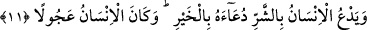

11. İnsan hayrı istediği kadar şerri de ister. İnsan pek acelecidir.
“İnsan hayrı istediği kadar” kendisi, âilesi, hizmetçileri ve malı hakkında hayır,
rızık, âfiyet ve rahmet isteyip de duâsı kabul edildiği gibi “şerri de ister” İnsan
öfkelenince şer ve lânetle kendisinin, âilesinin, hizmetçilerinin ve malının helâk olması
için de Allah’a duâ eder. Buradaki ‘insan’dan maksad, insan cinsidir. Bazı fertlerin hâli
insan cinsine isnâd edilmiştir. Ya da insanın bazı zamanlarındaki halleri hikâye
edilmiştir.
Şâyet hayırla edilen duânın kabul edildiği gibi lânetle edilen duâ da kabul edilseydi
helâk olurdu. Ya da mânâ şöyledir: “Aslında şer olduğu halde hayır zannettiği şeyle duâ
eder.” İşte bu yüzden kula gereken, arzu ve hevâsının hayır gördüğü ile değil, Allah
katında hayır olanla duâ etmektir.
“İnsan” yaratılışı gereği “pek acelecidir.” Aklına gelenin peşine düşer, sonucunu
düşünmez. Aklına gelen şeyin geçmesi için teennî ile; ağır ve temkinli davranmaz.
Kâşifî şöyle der: “Bir halden başka bir hale geçerken insan acele eder. Ne sevince, ne
darlığa, keder ve gama, ne kışa ve ne de yaza tahammül ve sabır gösterir.”
Bilesin ki duâ ya hakikat lisanı ile veya şerre götüren, şerri gerektiren seyyie
(kötülük) îtibârı iledir. İnsanoğlu hem sözde hem de fiilde acelecidir. Azâbı ve şerri
gerektiren amellerde ısrarcı davranır. Bir hadiste şöyle buyrulmuştur: “Mü’min çok
teennî ile hareket eder, münâfık ise bir şeyin üzerine hemen sıçrar.”[51]
Âdem (a.s.) çocuklarına şöyle demiştir: “Yapmak istediğiniz her iş için bir zaman
durun. Şüphesiz ben bir an durup düşünseydim, başıma gelenler gelmezdi.” Bir bedevî
de şöyle demiştir: “Acele etmekten sakının. Çünkü Araplar aceleye ‘bütün nedâmetlerin
anası’ derler.”
Mesnevî’de der ki:
Önüne bir lokma atsan köpek bile köpekliğiyle
Önce koklar da sonra yer a ihtiyatlı adam!
O burnuyla koklar, biz aklımızla koklarız.
Hele bir bak, biz de her şeyi aklımızla kokluyoruz.
“Acele şeytandandır.”[52] denilmiştir. Ancak şu altı yer müstesnadır: Vakit girdiğinde
namazı edâ, hazır olduğunda ölüyü defnetmek, evlenme çağına geldiğinde kızı
evlendirmek, zamanı gelince borcu ödemek, misafir gelince ona yemek yedirmek, günah
işlediğinde tevbede acele etmek.